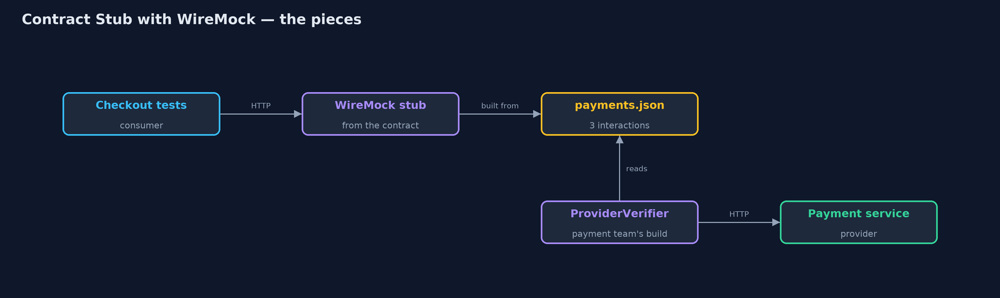
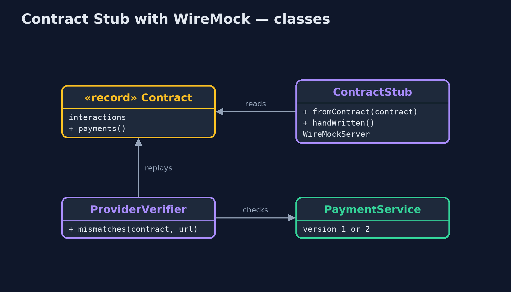
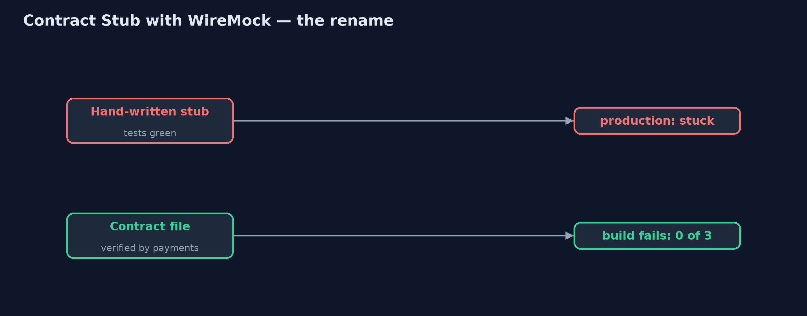
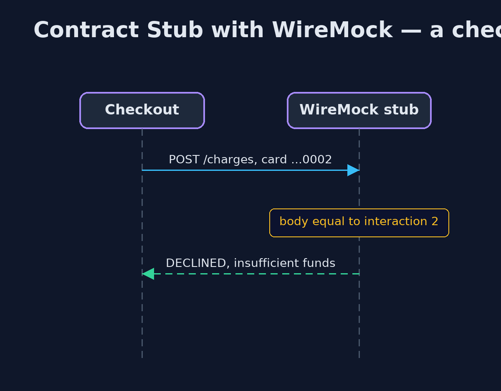

Contract Stub with WireMock Pattern
src/main/java/com/jk/explore/contractwiremock/
├── Checkout.java The consumer: checkout posts a charge to whatever payment address it is given, and reads the reply
├── Contract.java The contract between checkout and payments, kept as one JSON file both teams share: each interaction is a request and the reply it gets
├── ContractStub.java Real WireMock stub servers
├── PaymentService.java The payment team's real service over HTTP
├── ProviderVerifier.java The other half, run in the payment team's build: replays every interaction in the contract against the real service over HTTP, and reports each reply that differs
└── WireMockContractStubDemo.java The five acts: real WireMock stubs and a real payment service, all over HTTPBuild a real WireMock stub server from a shared contract file for checkout's tests, and replay the same file against the real payment service over HTTP, so the stub and the service can never quietly drift apart.
This is the real-tool version of the Contract Stub pattern. The plain Java version, a separate project in this category, keeps its stub and its checks in memory. Here everything goes over HTTP: the stub is a real WireMock server, the payment service is a real HTTP service, and checkout calls whichever address it is given.
One contract file, contracts/payments.json, lists three interactions: a request and the reply it gets. A WireMock stub is built from it, one stub per interaction, matched on the request body, and it answers 404 to anything else. The same file is replayed against the real payment service by the provider's verifier. This is exactly the flow Spring Cloud Contract automates: it turns contracts into WireMock stubs for consumers and into tests for providers; doing the two halves by hand here keeps every step visible.
The idea in everyday terms
Think of a fire drill run from the building's current floor plan. The drill is only useful if the plan matches the building, so the builders must update the plan whenever they move a wall. One plan, used by both the drill and the builders.
The scenario
The online store's checkout team tested against a stub of the payment service they had written themselves. The payment team renamed a field in their reply, the checkout tests stayed green because the stub never changed, and in production every payment left the order stuck.
Run
Nothing to install beyond a Java 21 JDK: WireMock and the payment service run inside the program, on local ports.
./gradlew runThe demo tells the story in 5 acts, each printing exact numbers that the tests check:
| Act | What it shows |
|---|---|
| 1. A stub that drifted | Against the hand-written WireMock stub, checkout confirms the order; against payment service version 2, the order is stuck. |
| 2. A stub from the contract | A WireMock stub built from contracts/payments.json's 3 interactions gives: confirmed, declined for no funds, rejected for a zero amount. |
| 3. The provider is checked too | Replayed over HTTP against version 1, 3 of 3 interactions match; against version 2, 0 of 3, failing the payment team's build. |
| 4. A strict stub | A charge in USD: the hand-written stub confirms it; the contract stub answers 404, Request was not matched. |
| 5. The bill | The contract file is shared work, run in both builds; it covers only listed interactions; Spring Cloud Contract automates this flow. |
Test
./gradlew test1 tests in DemoRunsTest. Every result the demo prints is asserted, with real WireMock stub servers and a real payment service on local ports, called over HTTP.
What the simulation got right, and what it left out
The plain Java version got the idea right: one contract feeds both the stub and a check of the real service, a renamed field fails the provider's build, and a strict stub refuses what the contract does not list. What it left out is the real mechanics. Here the contract is a file both teams share, the stub is a real HTTP server matching request bodies as JSON, and the refusal is WireMock's own 404, "Request was not matched", with a report of the closest stub. Spring Cloud Contract does this same flow for you, generating the WireMock stubs and the provider tests from contracts.
Technologies and versions
| Technology | Version | Used for |
|---|---|---|
| Java | 21 | the code (toolchain set in build.gradle) |
| Gradle | 9.2.1 (wrapper) | build and run, nothing to install |
| JUnit | 5.10.2 | the tests |
| WireMock | 3.13.2 (standalone) | the stub server, built from the contract |
| JDK HttpServer and HttpClient | Java 21 | the payment service, checkout and the verifier |
| videokit | repository tool | the narrated video and animation: Piper en_US-amy-medium, speed 0.8, longer pauses (the approved amy-slow voice) |
Learning Material
| Document | What it is for |
|---|---|
| Dependencies | what the framework and infrastructure are, and why they are here |
| Problem statement | the situation and what the project must show |
| Prerequisites | what you need to know first |
| Contract Stub with WireMock, explained | the acts in prose |
| Session guide | a one-hour lesson with exercises |
| Animated walkthrough | the acts step by step, narrated |
| Spec | what this project must be true of |
The pattern in one picture
One file, two uses.

Where each piece sits
Stub and verifier share the contract.

How the data moves
Caught in the provider's build.

Who calls whom, in order
The stub answers from the contract.

Video
video/contract-stub-with-wiremock-pattern-explained.mp4 (with .m4a audio and .srt subtitles) is built by video/build_video.sh. Rendered media is not committed.
What it costs
- Shared work. Both teams must share and version the contract file, and run it in both builds.
- Only what is listed. The contract covers its interactions, not speed or the real network.
- Strict on purpose. A charge in US dollars got 404 from the stub until the teams agree an interaction for it.
When this is too much
When one team owns both sides and deploys them together, an integration test against the real service is simpler. Contract stubs pay off when separate teams release separately.
Where you have already met this
- Spring Cloud Contract, which generates WireMock stubs and provider tests from contracts.
- Pact, whose consumer tests write the contract the provider verifies.
- WireMock mappings kept in a repository shared by two teams.
Where this sits
This project is in testing-design-patterns. It is the real-tool version of the plain Java Contract Stub project in the same category, which is left unchanged.